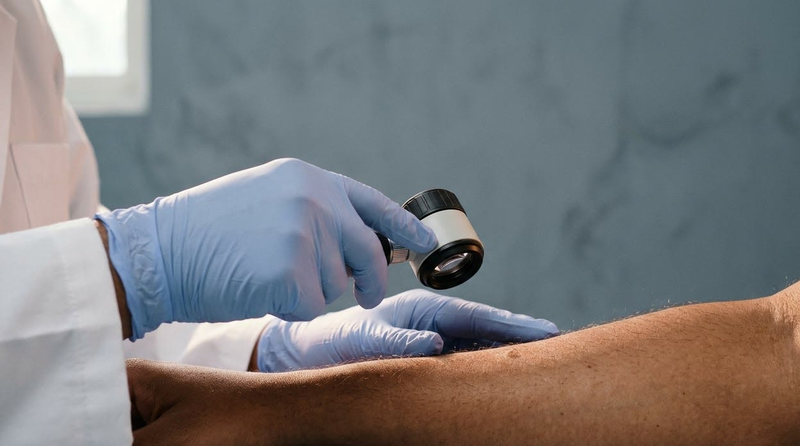

Home / Treatments
What we treat, and how.
Every treatment starts with a diagnosis. Some problems need a cream, not a machine, and you will be told which.

Skin and hair
Acne scars
Microneedling with radiofrequency for the dips pimples leave behind, and peels for the marks.
Read aboutPimples and acne scars
Pigmentation and detan
Creams, peels and laser for tan, dark patches and uneven tone.
Read aboutDark patches and tan
Mole removal
A small procedure, done after the mole has been checked.
Read aboutMoles, tattoos and scars
Stretch marks and scars
Treatments that help marks fade and feel smoother over a series of sittings.
Read aboutMoles, tattoos and scars
Derma facials
Medical facials that cleanse and hydrate, HydraFacial included.
Read aboutDark patches and tan
Vampire facial
Microneedling with PRP, the plasma from your own blood.
Read aboutPimples and acne scars
Hair loss and PRP
A diagnosis first. Then lotions, tablets or PRP sittings, as the cause needs.
Read aboutHair fall
Laser and aesthetic
Laser hair removal
Laser sittings that reduce unwanted hair on the face and body.
Read aboutUnwanted hair
Laser toning
Low-energy laser passes that fade tan and uneven colour over several sittings.
Read aboutDark patches and tan
Tattoo removal
Q-switched laser that fades ink over several sittings.
Read aboutMoles, tattoos and scars
Questions people ask before they book.
How many sittings will I need?
It depends on the problem, and you should hear a number before you start. As a rough guide, laser hair removal and tattoo fading take several sittings spaced weeks apart. Pimples need a few months of treatment. Ask for the likely number at your consultation.
Will it come back?
Some things can. Melasma is controlled, and sun can bring it back. Laser reduces hair, and hormones can bring some of it back. Botox wears off in a few months. You should know this before you pay for anything, so ask.
Are there side effects?
Every treatment has some. Redness and swelling for a few days are common after lasers and peels. Burns and dark marks are the risks to ask about, and they are the reason your skin type is checked first. Say so if your skin is sensitive or reacts easily.
Who will treat me?
Your consultation is with Dr. Sahitya Reddy, an MD dermatologist. If you are having a procedure, ask at the consultation who carries out each sitting.
What will it cost?
You can ask the consultation fee on WhatsApp or by phone before you come. For any procedure, ask for the cost of one sitting and the likely number of sittings before you begin.
Will it hurt?
Most procedures feel like quick pinpricks or a warm snap. Numbing cream is used for many of them. Say so if it is too much, and the sitting can pause.

Book a consultation
It starts with a conversation.
Tell us what is bothering you. Mon to Sat, 9:30 am to 8 pm. Sun, 10 am to 12 noon.